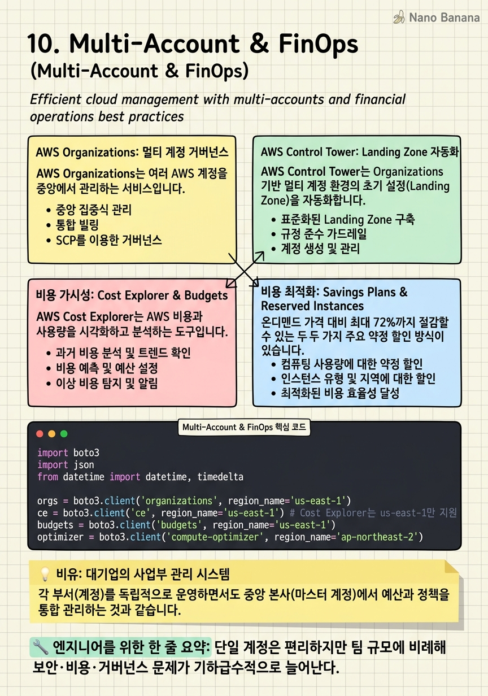

Multi-Account & FinOps

🎯 학습 목표
- Organizations OU 계층 구조를 비즈니스 맥락에 맞게 설계할 수 있다
- Control Tower Account Factory로 신규 계정을 표준화된 설정으로 자동 프로비저닝할 수 있다
- Cost Explorer와 Budgets로 팀별 비용을 추적하고 알림을 설정할 수 있다
- Savings Plans과 Reserved Instances의 트레이드오프를 설명하고 구매 전략을 수립할 수 있다
- FinOps 원칙을 조직에 도입하는 방법을 설계할 수 있다
AWS를 오래 사용할수록 계정이 늘어나고, 비용이 증가하며, 보안과 거버넌스가 복잡해집니다. 이 모든 것을 단일 계정에서 관리하는 것은 처음에는 편리하지만, 규모가 커질수록 위험하고 비효율적입니다.
멀티 계정 전략은 현대 AWS 아키텍처의 표준입니다. 각 팀·환경·서비스를 독립적인 AWS 계정에 분리하면 폭발 반경 제한(블라스트 레디어스 감소), 비용 가시성 향상, 보안 격리, 규정 준수가 모두 개선됩니다.
FinOps(Financial Operations)는 클라우드 비용을 기술적 문제뿐 아니라 조직 문화로 접근하는 방법론입니다. 엔지니어링, 재무, 비즈니스 팀이 협력하여 클라우드 지출을 가시화하고, 최적화하고, 비즈니스 가치와 연결하는 체계입니다.
이 챕터에서는 Organizations의 OU 설계, Control Tower의 Landing Zone 구성, 비용 최적화 도구와 전략, 그리고 FinOps 문화를 조직에 정착시키는 방법을 다룹니다.
핵심 내용
AWS Organizations: 멀티 계정 거버넌스
AWS Organizations는 여러 AWS 계정을 중앙에서 관리하는 서비스입니다. 계정을 계층 구조(OU: Organizational Unit)로 구성하여 정책을 그룹 수준에서 적용합니다.
전형적인 OU 구조:
Root
├── Security OU
│ ├── Audit Account
│ └── Log Archive Account
├── Infrastructure OU
│ ├── Shared Services Account
│ └── Network Account
├── Workloads OU
│ ├── Production OU
│ │ ├── App-A-Prod Account
│ │ └── App-B-Prod Account
│ └── Development OU
│ ├── App-A-Dev Account
│ └── App-B-Dev Account
└── Sandbox OU
└── Individual Dev Accounts
통합 결제(Consolidated Billing)는 Organizations의 기본 혜택입니다. 모든 계정의 비용이 마스터 계정으로 합산되어 볼륨 할인(Reserved Instance, Savings Plans 공유)이 적용됩니다.
스위치 역할(Switch Role)은 마스터 계정에서 다른 계정으로 역할을 전환하여 관리하는 방식입니다. 각 계정에 개별 IAM 사용자를 만들지 않고 단일 IdP(Okta, Azure AD)로 Single Sign-On을 구성합니다.
AWS Control Tower: Landing Zone 자동화
AWS Control Tower는 Organizations 기반 멀티 계정 환경의 초기 설정(Landing Zone)을 자동화하는 서비스입니다.
Landing Zone은 보안·거버넌스·운영 모범 사례가 적용된 표준 멀티 계정 환경입니다. Control Tower는 이를 몇 시간 만에 자동 구성합니다.
Account Factory는 새 AWS 계정을 사전 정의된 표준(OU 배치, 태깅, 기본 서비스 활성화)으로 자동 프로비저닝합니다. Account Factory for Terraform(AFT)은 Terraform으로 Account Factory를 코드화합니다.
Guardrail(가드레일)은 Control Tower에서 제공하는 사전 정의된 거버넌스 규칙입니다.
- 예방 가드레일: SCP로 구현. 특정 작업 자체를 차단
- 탐지 가드레일: AWS Config Rules로 구현. 위반 사항을 탐지하고 알림
Customizations for Control Tower(CfCT)는 Landing Zone에 커스텀 리소스(보안 그룹, Service Catalog 상품, Lambda 함수)를 자동 배포합니다. 신규 계정 생성 시 자동으로 표준 설정이 적용됩니다.
비용 가시성: Cost Explorer & Budgets
AWS Cost Explorer는 AWS 비용과 사용량을 시각화하고 분석하는 도구입니다. 서비스별, 계정별, 태그별, 리전별로 비용을 분류합니다.
비용 할당 태그(Cost Allocation Tags)는 리소스에 Project, Team, Environment 같은 태그를 붙이고 Cost Explorer에서 이 태그 기준으로 비용을 분석합니다. 태그가 없으면 비용 귀속이 불가능합니다. AWS Config Rule로 태그 없는 리소스를 자동 탐지하고 알림합니다.
AWS Budgets는 비용·사용량·예약 사용률 목표를 설정하고 초과 시 알림합니다.
- 실제 비용 예산: 특정 비용을 초과하면 SNS·이메일·Slack 알림
- 예측 비용 예산: 월말 예상 비용이 목표를 초과하면 조기 알림
- 사용량 예산: EC2 시간, S3 GB 등 사용량 기준
- 예약 커버리지 예산: RI/Savings Plans 커버리지가 목표 미달 시 알림
Cost Anomaly Detection은 ML로 비용 이상을 자동 탐지합니다. 갑자기 증가한 서비스·계정·태그를 즉시 알립니다.
비용 최적화: Savings Plans & Reserved Instances
온디맨드 가격 대비 최대 72%까지 절감할 수 있는 두 가지 주요 약정 할인 방식이 있습니다.
Reserved Instances(RI): 특정 인스턴스 타입·리전·OS에 대해 1년 또는 3년을 약정합니다. 가장 큰 할인율을 제공하지만 유연성이 낮습니다.
Savings Plans: 시간당 최소 지출액을 약정합니다. Compute Savings Plans(EC2, Fargate, Lambda)는 인스턴스 타입 제약이 없어 훨씬 유연합니다. EC2 Instance Savings Plans는 특정 인스턴스 패밀리·리전에 약정하며 RI보다 약간 낮은 할인율을 제공합니다.
구매 전략:
- On-Demand 사용량 분석 (3개월 이상)
- 안정적 베이스라인 사용량 파악 (예: 항상 사용하는 최소 인스턴스 수)
- 베이스라인에 대해 Savings Plans 구매
- 가변 사용량은 Spot으로 커버
- 분기별 사용량 재검토 후 추가 구매
Spot Instance는 미사용 EC2 용량을 최대 90% 할인에 사용합니다. 2분 전 알림 후 회수될 수 있어 무상태 워크로드(배치 처리, CI/CD, 비동기 작업)에 적합합니다.
FinOps 문화와 비용 최적화 체계
FinOps는 클라우드 비용을 비즈니스 가치와 연결하는 운영 철학입니다. FinOps Foundation이 정의한 세 단계 성숙도 모델이 있습니다.
1단계 — 크롤(Crawl): 비용 가시성 확보. 모든 리소스에 태그 적용, 팀별 비용 할당, 월간 비용 리뷰 시작.
2단계 — 워크(Walk): 최적화 액션. 미사용 리소스 정리, Savings Plans 구매, 적정 사이징(Rightsizing), 스토리지 티어링 적용.
3단계 — 런(Run): 지속적 최적화. 비용을 제품 메트릭(고객당 비용, 요청당 비용)으로 추적, 엔지니어링 팀이 비용 최적화를 자체적으로 실행, 자동화된 비용 거버넌스.
비용 최적화 Quick Wins:
- Compute Optimizer: EC2, ECS, Lambda 적정 사이징 AI 추천
- S3 Intelligent-Tiering: 접근 패턴에 따라 자동으로 스토리지 티어 이동
- RDS 스냅샷 정리: 오래된 스냅샷 자동 삭제 정책
- 개발 환경 자동 종료: 주말·야간 EC2/RDS 자동 정지 (Lambda + EventBridge Scheduler)
- ECR 라이프사이클 정책: 오래된 이미지 자동 삭제
💡 비유로 이해하기
멀티 계정과 FinOps를 대기업 경영에 비유해봅시다. AWS Organizations는 그룹사 구조입니다. 삼성전자(마스터 계정)가 삼성전기·삼성SDS(각 계정)를 자회사로 두되, 그룹사 전체에 공통 윤리경영 규정(SCP)을 적용합니다. 각 자회사는 독립적으로 운영하지만 그룹 가이드라인을 벗어날 수 없습니다.
Control Tower는 신규 자회사 설립 절차 표준화입니다. 법무·재무·인사 기본 설정이 자동으로 완료된 상태로 새 법인이 설립됩니다.
FinOps는 기업의 예산 관리 문화입니다. 각 사업부가 예산을 받고, 사용 현황을 CEO에게 보고하며, 절감 성과에 인센티브를 받는 문화가 정착되어야 합니다. 클라우드 비용도 마찬가지입니다. 엔지니어링 팀이 "내 팀이 이번 달 AWS를 얼마나 썼고, 어디서 절감할 수 있는가"를 자각하는 문화가 FinOps의 핵심입니다.
💻 코드 예시
Organizations를 통해 계정 비용을 분석하고, Budgets 알림을 설정하며, Compute Optimizer 추천을 조회하는 예제입니다.
import boto3
import json
from datetime import datetime, timedelta
orgs = boto3.client('organizations', region_name='us-east-1')
ce = boto3.client('ce', region_name='us-east-1') # Cost Explorer는 us-east-1만 지원
budgets = boto3.client('budgets', region_name='us-east-1')
optimizer = boto3.client('compute-optimizer', region_name='ap-northeast-2')
# 1. 팀별(태그별) 월간 비용 분석
def get_cost_by_team(start_date: str, end_date: str) -> list[dict]:
response = ce.get_cost_and_usage(
TimePeriod={'Start': start_date, 'End': end_date},
Granularity='MONTHLY',
Filter={
'Tags': {'Key': 'Team', 'Values': ['backend', 'ml', 'platform'], 'MatchOptions': ['EQUALS']}
},
GroupBy=[{'Type': 'TAG', 'Key': 'Team'}],
Metrics=['UnblendedCost']
)
results = []
for result in response['ResultsByTime']:
for group in result['Groups']:
team = group['Keys'][0].replace('Team$', '')
cost = float(group['Metrics']['UnblendedCost']['Amount'])
results.append({'team': team, 'cost_usd': cost, 'period': result['TimePeriod']['Start']})
return results
# 2. 팀별 AWS Budget 생성
def create_team_budget(account_id: str, team: str, monthly_limit_usd: float) -> None:
budgets.create_budget(
AccountId=account_id,
Budget={
'BudgetName': f'{team}-monthly-budget',
'BudgetLimit': {'Amount': str(monthly_limit_usd), 'Unit': 'USD'},
'BudgetType': 'COST',
'TimeUnit': 'MONTHLY',
'CostFilters': {'TagKeyValue': [f'user:Team${team}']}
},
NotificationsWithSubscribers=[
{
'Notification': {
'NotificationType': 'ACTUAL',
'ComparisonOperator': 'GREATER_THAN',
'Threshold': 80.0,
'ThresholdType': 'PERCENTAGE'
},
'Subscribers': [
{'SubscriptionType': 'EMAIL', 'Address': f'{team}-lead@company.com'}
]
},
{
'Notification': {
'NotificationType': 'FORECASTED',
'ComparisonOperator': 'GREATER_THAN',
'Threshold': 100.0,
'ThresholdType': 'PERCENTAGE'
},
'Subscribers': [
{'SubscriptionType': 'SNS', 'Address': 'arn:aws:sns:ap-northeast-2:123:cost-alerts'}
]
}
]
)
print(f'Budget created for team {team}: ${monthly_limit_usd}/month')
# 3. EC2 적정 사이징 추천 조회 (Compute Optimizer)
def get_rightsizing_recommendations() -> list[dict]:
response = optimizer.get_ec2_instance_recommendations()
recommendations = []
for rec in response.get('instanceRecommendations', []):
if rec['findingReasonCodes'][0] == 'CPUUnderprovisioned' or \
rec['finding'] == 'OVER_PROVISIONED':
current = rec['currentInstanceType']
suggested = rec['recommendationOptions'][0]['instanceType']
saving = rec['recommendationOptions'][0].get('estimatedMonthlySavings', {}).get('value', 0)
recommendations.append({
'instance_id': rec['instanceArn'].split('/')[-1],
'current': current, 'suggested': suggested,
'monthly_savings_usd': float(saving)
})
return sorted(recommendations, key=lambda x: x['monthly_savings_usd'], reverse=True)
# 실행 예시
start = (datetime.now().replace(day=1) - timedelta(days=1)).replace(day=1).strftime('%Y-%m-%d')
end = datetime.now().replace(day=1).strftime('%Y-%m-%d')
costs = get_cost_by_team(start, end)
for c in costs:
print(f"Team {c['team']}: ${c['cost_usd']:.2f} ({c['period']})")
create_team_budget('123456789012', 'ml', 5000.0)
recs = get_rightsizing_recommendations()
print(f'\nTop rightsizing opportunity: {recs[0]} → ${recs[0]["monthly_savings_usd"]:.0f}/month savings')Cost Explorer의 GroupBy: TAG로 팀별 비용을 집계합니다. ACTUAL 알림(80% 시)과 FORECASTED 알림(100% 초과 예측 시)을 조합하면 조기에 과다 지출을 탐지합니다. Compute Optimizer의 get_ec2_instance_recommendations는 CloudWatch 메트릭 기반 ML로 과잉 프로비저닝된 인스턴스를 탐지합니다. monthly_savings_usd 기준으로 정렬하면 절감 효과가 큰 순으로 우선 최적화가 가능합니다.
🏭 현업에서의 평가
✅ 시니어가 보는 것
- OU 계층 설계와 SCP 적용 전략
- 신규 계정 프로비저닝 자동화(Control Tower AFT)
- 비용 할당 태그 전략과 태그 없는 리소스 탐지 자동화
- Savings Plans 구매 전략(커버리지, 유연성 균형)
- 팀별 비용 책임(Showback/Chargeback) 구현 방법
⚠️ 레드 플래그
- 모든 워크로드를 단일 계정에 운영 — 폭발 반경·보안·비용 가시성 문제
- 태그 없는 리소스 — 비용 귀속 불가, 최적화 포인트 파악 불가
- Savings Plans 없이 100% 온디맨드 — 불필요한 30-70% 과잉 지출
- 개발 환경 24시간 가동 — 주말·야간 자동 종료만으로 50% 절감 가능
🎤 예상 인터뷰 질문
- 새 팀이 AWS를 사용하기 시작할 때 어떻게 비용 거버넌스를 처음부터 정착시키겠습니까?
- 월간 AWS 비용이 갑자기 30% 증가했습니다. 원인을 어떻게 찾겠습니까?
- Savings Plans와 Reserved Instances 중 무엇을 먼저 구매하겠습니까? 그 이유는?
✨ 핵심 요약
멀티 계정은 선택이 아닌 표준
단일 계정은 편리하지만 팀 규모에 비례해 보안·비용·거버넌스 문제가 기하급수적으로 늘어난다.
OU 계층이 거버넌스의 뼈대
Security/Infrastructure/Workloads/Sandbox OU가 표준 구조. OU 설계는 조직 구조와 보안 요구사항을 반영해야 한다.
Control Tower = Landing Zone 자동화의 시작점
처음부터 올바른 구조로 시작하는 것이 나중에 리팩토링하는 것보다 100배 쉽다.
태그가 없으면 FinOps가 없다
모든 리소스의 Team, Project, Environment, CostCenter 태그가 선행. AWS Config Rule로 미태그 리소스 자동 탐지.
Savings Plans가 RI보다 유연하다
인스턴스 타입 변경 자유. Compute Savings Plans로 EC2+Fargate+Lambda를 하나의 약정으로 커버.
Spot = 비용 80-90% 절감, 단 무상태 워크로드에만
CI/CD, 배치 처리, 비동기 작업에 Spot 우선 적용. Spot 인터럽션 처리 코드 필수.
개발 환경 자동 종료가 즉각적 절감
주말·야간 EC2/RDS 자동 정지 → 월 비용 40-60% 절감. EventBridge Scheduler + Lambda로 30분 구현.
FinOps는 도구가 아닌 문화
엔지니어가 자신의 코드가 얼마의 비용을 만드는지 인식하고, 비용 효율을 개발 지표로 삼는 문화가 목표.